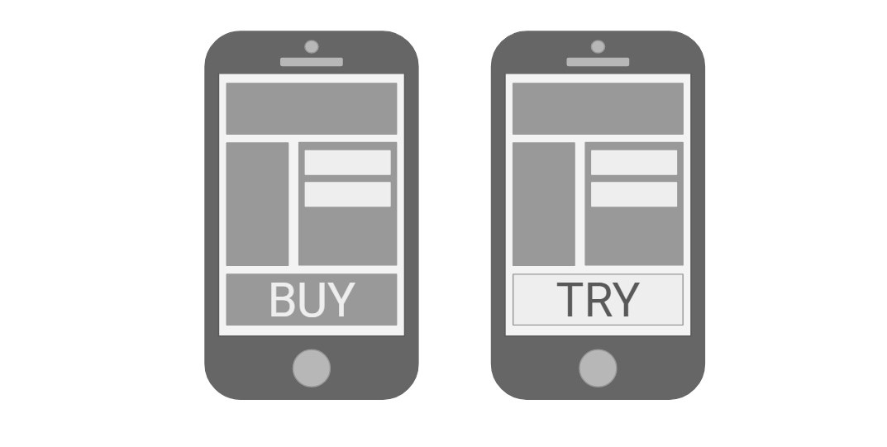

A/B Testing is an optimization technique for comparing two different versions of a design to find out which gets closer to a specified business goal or metric. It is a way to quickly discover which is better based on an educated guess.
A/B Testing is Day 1 of 100 Days of UX, an exploratory effort to survey the 100 methods of design outlined in Martin and Hannington's Universal Methods of Design. For 100 consecutive days, I learn one new method a day and write about it.
Before an A/B test is conducted, a business goal is specified. For example, increasing the click-through rate on an ad.
Next, an educated guess is made about which single aspect of the current design can be altered to achieve the goal. For instance, making the ad part of the content as opposed to a banner because users tend to unconsciously skip such ads due to banner blindness.
After the change is made, both the existing design (in some cases "A") and the altered one ("B") are randomly shown to live users.
A and B are then assessed to see which performs better at getting to the objective.
Usually, with A/B Testing, the aspects of the design that are altered are color, size, and labeling (when dealing with buttons, calls to action, etc); tone, length, and font size (when dealing with text); and size and placement (when dealing with images). In addition to these, many other aspects of the design can also be tinkered with like the number of form elements on a page, its layout, etc.
In the design process, A/B Testing is a qualitative evaluative method that lets us know what exactly do to to improve (or not worsen) a currently existing product. To find out why users behave differently to A and B versions, a different design method that gets user feedback would be necessary. Over the next 99 days, those methods will be discovered!